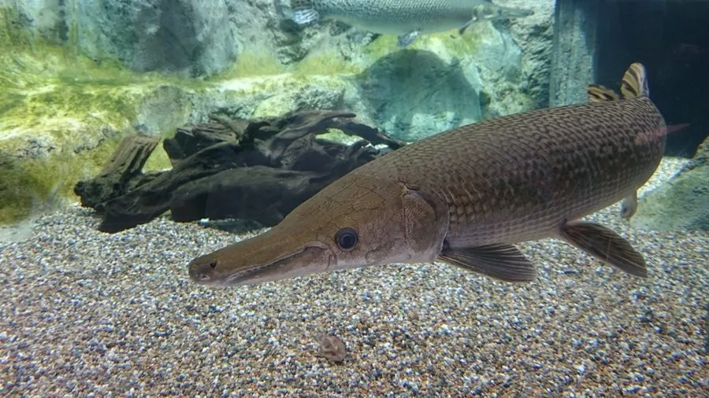

鱼类 · 动物界
雀鳝 Atractosteus spatula

北美淡水中的大型原始鱼类，吻部长如鳄嘴、密布尖锐牙齿，体被坚硬釉质鳞片，可长逾两米，能呼吸空气在缺氧水体中存活。
- 分类
- 门脊索动物门纲硬骨鱼纲目雀鳝目科雀鳝科属大雀鳝属
- 栖息环境
- 河流、湖泊、沼泽、牛轭湖与河口，偏好缓流与植被茂密的水体
- 地理分布
- 美国南部密西西比河流域、墨西哥东北部；作为观赏鱼被引入亚洲多地
- 保护级别
- IUCN 无危（LC）；在中国属外来入侵物种
物种志
雀鳝是北美最大的淡水鱼之一，成年体长 1.5–2.5 米，最大记录超过 3 米，体重 50–100 千克。体形修长呈圆柱状，吻部极长而扁平，上下颌密布尖锐的锥形齿，形似鳄鱼的口鼻，故又称鳄雀鳝；体被菱形硬鳞，表面覆一层釉质，坚硬如铠甲。背鳍与臀鳍位于身体极后部，尾鳍圆形，体色橄榄褐至灰绿，腹部浅白，体侧常带深色斑点。
它们分布于美国南部与墨西哥东北部的河流、湖泊、沼泽与河口，偏好水流缓慢、植被茂密的水体。雀鳝是伏击型猎手，常静浮于水面附近，待鱼、蟹、水鸟靠近时突然侧向咬击。它的鳔特化为类似肺的结构，可直接吞入空气呼吸，因此在溶氧极低的水中也能生存。繁殖期在春季，雌鱼产下带毒的卵，卵黏附于水草。由于外形凶悍、被误传为“食人鱼”，它常遭捕杀；作为观赏鱼被引入亚洲后，又成为难以清除的外来入侵种。
形态与习性
- 体长约 1.5–2.5 m，最大记录超过 3 m
- 体重约 50–100 kg
- 食性鱼类、蟹、虾、水鸟与小型哺乳动物
- 繁殖春季产卵，卵黏附水草且含毒素
- 呼吸鳔特化可吞入空气，能在低氧水体中存活
- 鳞片菱形硬鳞表面覆釉质，坚硬如铠甲
- 寿命野外可达 50 年，饲养下更长
趣味知识
- 雀鳝的吻部像鳄鱼嘴，长满尖牙，因此得名“鳄雀鳝”。
- 它的卵有毒，误食会引起恶心呕吐，处理时须小心。
- 它能直接吞空气呼吸，在闷热缺氧的池塘里也能活下来。